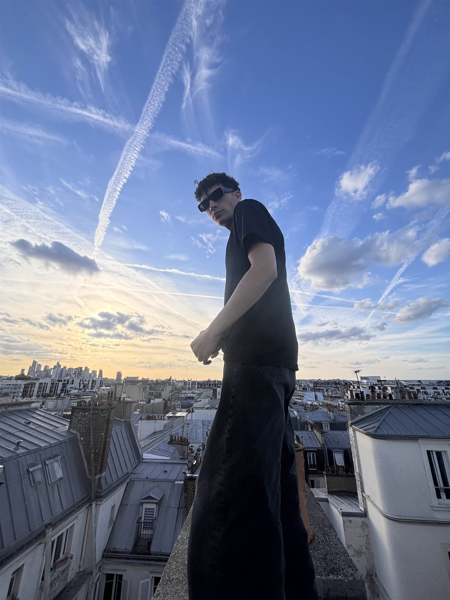

Modèle indépendant / Bookings
Aziz
Modele
Une présence. Plusieurs façons d'habiter l'image.
Découvrir les images
Sélection
L'image
en mouvement
Portraits, instants et silhouettes.
Une sélection personnelle.
A — 06
Le regard change.
La présence reste.
Portrait / 07
À propos
Le calme
comme langage.
Un travail de présence, de proportion et d'attention à la lumière.
À travers le portrait, l'éditorial et les images du quotidien, ce portfolio explore différentes facettes d'une même identité — sans surjouer le geste.
Voir le profil professionnelInformations
Profil
professionnel
Informations de booking et mensurations.
- Taille
- 183 cm
- Poids
- 78 kg
- Silhouette
- Athlétique, tonique
- Représentation
- Indépendant / Bookings
- Disponibilité
- Sur demande